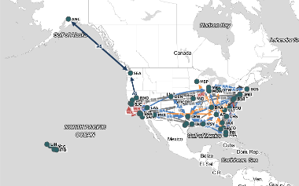
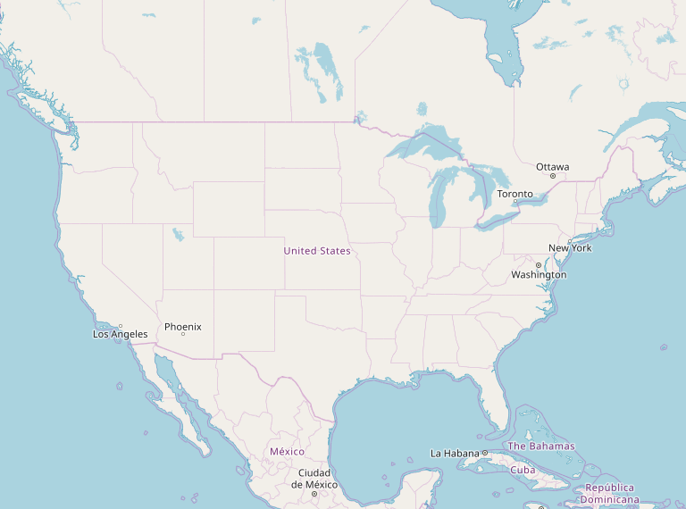
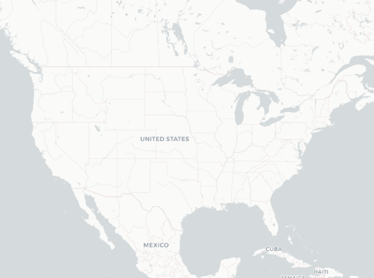
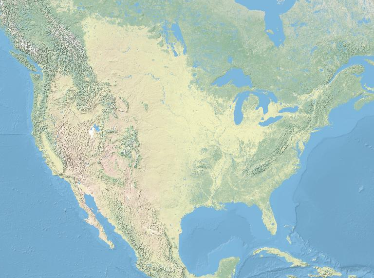

<!DOCTYPE html>
<html lang="en">
<head>
<meta charset="UTF-8">
<title>Map Mode — Nexus Documentation | Graph Nexus</title>
<meta name="viewport" content="width=device-width, initial-scale=1">
<meta name="description" content="Map mode in Nexus allows you to analyse geospatial data. As long as graph data has latitude and longitude location properties, users can visualise chart it">
<link rel="icon" href="../../assets/nexus-mark.png" type="image/png">
<link rel="preconnect" href="https://fonts.googleapis.com">
<link rel="preconnect" href="https://fonts.gstatic.com" crossorigin>
<link rel="stylesheet" href="https://fonts.googleapis.com/css2?family=Geist:wght@400;500;600;700&family=Geist+Mono:wght@400;500;600&display=swap">
<script>(function(){var t;try{t=localStorage.getItem('nexus-docs-theme')}catch(e){}if(t!=='light'&&t!=='dark')t=matchMedia('(prefers-color-scheme: dark)').matches?'dark':'light';document.documentElement.setAttribute('data-theme',t);if(location.protocol!=='file:'){var s=document.createElement('style');s.textContent='@media (prefers-reduced-motion: no-preference){@view-transition{navigation:auto}}';document.head.appendChild(s)}})()</script>
<link rel="stylesheet" href="../../assets/doc.css">
</head>
<body data-root="../../">
<a class="skip-link" href="#content">Skip to content</a>
<header class="site">
  <div class="logo">
    <a href="../../site/index.html">
      
    </a>
  </div>
  <button class="nav-toggle" type="button" aria-expanded="false" aria-controls="doc-nav" aria-label="Documentation menu">
    <svg class="menu-icon" viewBox="0 0 24 24" width="20" height="20" aria-hidden="true" fill="none" stroke="currentColor" stroke-width="1.75" stroke-linecap="round"><path class="l1" d="M4 7h16"/><path class="l2" d="M4 12h16"/><path class="l3" d="M4 17h16"/></svg><span class="nav-toggle-label" aria-hidden="true">Docs</span>
  </button>
  <div class="doc-search header-search" role="search">
    <label class="sr-only" for="doc-search-input">Search documentation</label>
    <input id="doc-search-input" type="search" placeholder="Search guides and API  /" autocomplete="off">
    <ul class="search-results" role="listbox" aria-label="Search results"></ul>
  </div>
  <nav aria-label="Documentation">
    <a href="../../site/index.html">Home</a>
    <a href="../../examples/index.html">Examples</a>
    <a href="../../graph-nexus/index.html" class="current">Document</a>
    <a class="gh-star" href="https://github.com/dark-kazansky/graph-nexus" target="_blank" rel="noopener" aria-label="Graph Nexus on GitHub (opens in a new tab)"><svg viewBox="0 0 16 16" width="16" height="16" aria-hidden="true"><path fill="currentColor" d="M8 0C3.58 0 0 3.58 0 8c0 3.54 2.29 6.53 5.47 7.59.4.07.55-.17.55-.38 0-.19-.01-.82-.01-1.49-2.01.37-2.53-.49-2.69-.94-.09-.23-.48-.94-.82-1.13-.28-.15-.68-.52-.01-.53.63-.01 1.08.58 1.23.82.72 1.21 1.87.87 2.33.66.07-.52.28-.87.51-1.07-1.78-.2-3.64-.89-3.64-3.95 0-.87.31-1.59.82-2.15-.08-.2-.36-1.02.08-2.12 0 0 .67-.21 2.2.82.64-.18 1.32-.27 2-.27.68 0 1.36.09 2 .27 1.53-1.04 2.2-.82 2.2-.82.44 1.1.16 1.92.08 2.12.51.56.82 1.27.82 2.15 0 3.07-1.87 3.75-3.65 3.95.29.25.54.73.54 1.48 0 1.07-.01 1.93-.01 2.2 0 .21.15.46.55.38A8.013 8.013 0 0016 8c0-4.42-3.58-8-8-8z"/></svg></a>
  </nav>
  <div class="toggle-switch">
    <label class="switch-label">
      <input type="checkbox" class="checkbox" aria-label="Dark mode">
      <span class="slider" aria-hidden="true"></span>
    </label>
  </div>
</header>
<div class="doc-layout">
<nav class="doc-nav" id="doc-nav" aria-label="Graph Nexus documentation">
<details class="doc-nav-group">
<summary>Overview</summary><ul>
<li><a href="../../graph-nexus/index.html">Documentation Home</a></li>
<li><a href="../../graph-nexus/api.html">API Index</a></li>
<li><a href="../../graph-nexus/api-signatures.html">API Signatures</a></li>
</ul></details>
<details class="doc-nav-group">
<summary>Installing Nexus</summary><ul>
<li><a href="../../graph-nexus/installing/installing-graph-nexus.html">Installing Nexus</a></li>
<li><a href="../../graph-nexus/installing/importing-graph-nexus.html">Importing Nexus</a></li>
<li><a href="../../graph-nexus/installing/graph-nexus-and-typescript.html">Nexus and TypeScript</a></li>
<li><a href="../../graph-nexus/installing/upgrading.html">Upgrading</a></li>
<li><a href="../../graph-nexus/installing/using-graph-nexus-with-angular.html">Using Nexus with Angular</a></li>
<li><a href="../../graph-nexus/installing/using-graph-nexus-with-react.html">Using Nexus with React</a></li>
<li><a href="../../graph-nexus/installing/using-graph-nexus-with-rollup.html">Using Nexus with Rollup</a></li>
<li><a href="../../graph-nexus/installing/using-graph-nexus-with-vue.html">Using Nexus with Vue</a></li>
<li><a href="../../graph-nexus/installing/using-graph-nexus-with-webpack.html">Using Nexus with Webpack</a></li>
<li><a href="../../graph-nexus/installing/using-graph-nexus-with-plain-javascript.html">Using Nexus with plain JavaScript</a></li>
</ul></details>
<details class="doc-nav-group" open>
<summary>Basics</summary><ul>
<li><a href="../../graph-nexus/basics/architecture.html">Architecture</a></li>
<li><a href="../../graph-nexus/basics/chart-basics.html">Chart Basics</a></li>
<li><a href="../../graph-nexus/basics/combos.html">Combos</a></li>
<li><a href="../../graph-nexus/basics/events-basics.html">Events Basics</a></li>
<li><a href="../../graph-nexus/basics/layout-basics.html">Layout Basics</a></li>
<li><a href="../../graph-nexus/basics/loading-data.html">Loading Data</a></li>
<li><a href="../../graph-nexus/basics/map-mode.html" class="current" aria-current="page">Map Mode</a></li>
<li><a href="../../graph-nexus/basics/time-bar.html">Time Bar</a></li>
</ul></details>
<details class="doc-nav-group">
<summary>Features</summary><ul>
<li><a href="../../graph-nexus/features/3d-view.html">3D View</a></li>
<li><a href="../../graph-nexus/features/aggregate-links.html">Aggregate Links</a></li>
<li><a href="../../graph-nexus/features/chart-export.html">Chart Export</a></li>
<li><a href="../../graph-nexus/features/combos-concepts.html">Combos Concepts</a></li>
<li><a href="../../graph-nexus/features/fonts-and-font-icons.html">Fonts and Font Icons</a></li>
<li><a href="../../graph-nexus/features/graph-centrality.html">Graph Centrality</a></li>
<li><a href="../../graph-nexus/features/graph-engine.html">Graph Engine</a></li>
<li><a href="../../graph-nexus/features/node-and-combo-styling.html">Node and Combo Styling</a></li>
<li><a href="../../graph-nexus/features/pdf-export.html">PDF Export</a></li>
<li><a href="../../graph-nexus/features/right-to-left-text.html">Right-to-Left Text</a></li>
<li><a href="../../graph-nexus/features/self-links.html">Self Links</a></li>
<li><a href="../../graph-nexus/features/time-zones.html">Time Zones</a></li>
</ul></details>
<details class="doc-nav-group">
<summary>Best Practices</summary><ul>
<li><a href="../../graph-nexus/best-practices/asynchronous-javascript.html">Asynchronous JavaScript</a></li>
<li><a href="../../graph-nexus/best-practices/coding-and-testing-tips.html">Coding and Testing Tips</a></li>
<li><a href="../../graph-nexus/best-practices/cross-origin-images-cors.html">Cross-Origin Images (CORS)</a></li>
<li><a href="../../graph-nexus/best-practices/image-formats.html">Image Formats</a></li>
<li><a href="../../graph-nexus/best-practices/obfuscation-requirements.html">Obfuscation Requirements</a></li>
<li><a href="../../graph-nexus/best-practices/resizing-components.html">Resizing Components</a></li>
<li><a href="../../graph-nexus/best-practices/troubleshooting.html">Troubleshooting</a></li>
</ul></details>
<details class="doc-nav-group">
<summary>Third Party Integrations</summary><ul>
<li><a href="../../graph-nexus/integrations/angular-reference.html">Angular Reference</a></li>
<li><a href="../../graph-nexus/integrations/neo4j-tutorial.html">Neo4j Tutorial</a></li>
<li><a href="../../graph-nexus/integrations/react-reference.html">React Reference</a></li>
<li><a href="../../graph-nexus/integrations/third-party-libraries.html">Platforms and Dependencies</a></li>
<li><a href="../../graph-nexus/integrations/vue-reference.html">Vue Reference</a></li>
<li><a href="../../graph-nexus/integrations/webgl.html">WebGL</a></li>
</ul></details>
<details class="doc-nav-group">
<summary>About Nexus</summary><ul>
<li><a href="../../graph-nexus/about/accessibility.html">Accessibility</a></li>
<li><a href="../../graph-nexus/about/alpha-beta-features.html">Alpha and Beta Features</a></li>
<li><a href="../../graph-nexus/about/deprecation-process.html">Deprecation Process</a></li>
<li><a href="../../graph-nexus/about/performance.html">Performance</a></li>
<li><a href="../../graph-nexus/about/security.html">Security</a></li>
</ul></details>
<details class="doc-nav-group">
<summary>Timeline · Overview</summary><ul>
<li><a href="../../graph-nexus/timeline/js/docs.html">Documentation Home</a></li>
<li><a href="../../graph-nexus/timeline/js/api.html">API Reference</a></li>
</ul></details>
<details class="doc-nav-group">
<summary>Timeline · Getting Started</summary><ul>
<li><a href="../../graph-nexus/timeline/js/getting-started.html">Getting Started</a></li>
<li><a href="../../graph-nexus/timeline/js/updating.html">Updating</a></li>
</ul></details>
<details class="doc-nav-group">
<summary>Timeline · Basics</summary><ul>
<li><a href="../../graph-nexus/timeline/js/timeline-basics.html">Timeline Essentials</a></li>
<li><a href="../../graph-nexus/timeline/js/scales.html">Scales</a></li>
</ul></details>
<details class="doc-nav-group">
<summary>Timeline · Items</summary><ul>
<li><a href="../../graph-nexus/timeline/js/entities.html">Entities</a></li>
<li><a href="../../graph-nexus/timeline/js/events.html">Events</a></li>
<li><a href="../../graph-nexus/timeline/js/markers.html">Markers</a></li>
<li><a href="../../graph-nexus/timeline/js/time-series-charts.html">Time Series Charts</a></li>
<li><a href="../../graph-nexus/timeline/js/heatmap.html">Heatmap</a></li>
<li><a href="../../graph-nexus/timeline/js/font-icons.html">Font Icons</a></li>
</ul></details>
<details class="doc-nav-group">
<summary>Timeline · Data and Time</summary><ul>
<li><a href="../../graph-nexus/timeline/js/handling-data.html">Handling Data</a></li>
<li><a href="../../graph-nexus/timeline/js/updating-data.html">Updating Data</a></li>
<li><a href="../../graph-nexus/timeline/js/handling-time.html">Handling Time</a></li>
<li><a href="../../graph-nexus/timeline/js/time-zones.html">Time Zones</a></li>
</ul></details>
<details class="doc-nav-group">
<summary>Timeline · Interaction</summary><ul>
<li><a href="../../graph-nexus/timeline/js/handling-events.html">Handling Events</a></li>
</ul></details>
<details class="doc-nav-group">
<summary>Timeline · Integration</summary><ul>
<li><a href="../../graph-nexus/timeline/js/graph-nexus-integration.html">Nexus Integration</a></li>
<li><a href="../../graph-nexus/timeline/js/export.html">Export</a></li>
<li><a href="../../graph-nexus/timeline/js/migration.html">Migration</a></li>
</ul></details>
<details class="doc-nav-group">
<summary>Timeline · About</summary><ul>
<li><a href="../../graph-nexus/timeline/js/architecture.html">Architecture</a></li>
<li><a href="../../graph-nexus/timeline/js/accessibility.html">Accessibility</a></li>
<li><a href="../../graph-nexus/timeline/js/obfuscation-requirements.html">Obfuscation Requirements</a></li>
<li><a href="../../graph-nexus/timeline/js/alpha-beta-features.html">Alpha, Beta and Deprecated Features</a></li>
</ul></details>
</nav>
<main class="doc-content" id="content">
<h1>Map Mode</h1><h2 id="intro">Introduction<a class="heading-anchor" href="#intro" aria-label="Link to this section">#</a></h2><p>Map mode in Nexus allows you to analyse geospatial data. 
As long as graph data has latitude and longitude location properties, users can visualise
chart items on a map.</p><p class="anchor" id="example">Map mode is also compatible with any map tile provider.</p><div class="mapwrapper"><div id="thumbnails"><h3 id="select-map-tiles">Map Tile Examples<a class="heading-anchor" href="#select-map-tiles" aria-label="Link to this section">#</a></h3><div id="thumbnail-wrapper" style="display:flex;flex-wrap:wrap;gap:12px"><div class="map-thumbnail"><a class="thumbnail" href="#thumbnails" id="tiles-open"></a></div><div class="map-thumbnail"><a class="thumbnail" href="#thumbnails" id="tiles-cartodb"></a></div><div class="map-thumbnail"><a class="thumbnail" href="#thumbnails" id="tiles-nasa"></a></div><div class="map-thumbnail"><a class="thumbnail" href="#thumbnails" id="tiles-esri-physical"></a></div></div></div><h2 id="leaflet">Nexus and Leaflet<a class="heading-anchor" href="#leaflet" aria-label="Link to this section">#</a></h2><p>To support map mode, you need to load
<a href="https://leafletjs.com/">Leaflet.js</a>
into the page before showing the map.
We recommend using the version bundled in the <strong>./map</strong>
directory of the <strong>nexusgraph</strong> package.</p><p>You can include the <strong>graph-nexus/assets/vendor/leaflet/leaflet.js</strong> JS bundle
and <strong>graph-nexus/assets/vendor/leaflet/leaflet.css</strong> stylesheet in your app as HTML tags:
</p><pre class="prettyprint prettyprinted"><code class="lang-html"><span class="tag">&lt;head&gt;</span><span class="pln">
  </span><span class="tag">&lt;link</span><span class="pln"> </span><span class="atn">rel</span><span class="pun">=</span><span class="atv">"stylesheet"</span><span class="pln"> </span><span class="atn">type</span><span class="pun">=</span><span class="atv">"text/css"</span><span class="pln"> </span><span class="atn">href</span><span class="pun">=</span><span class="atv">"graph-nexus/assets/vendor/leaflet/leaflet.css"</span><span class="tag">/&gt;</span><span class="pln">
  </span><span class="tag">&lt;script</span><span class="pln"> </span><span class="atn">type</span><span class="pun">=</span><span class="atv">"text/javascript"</span><span class="pln"> </span><span class="atn">src</span><span class="pun">=</span><span class="atv">"graph-nexus/assets/vendor/leaflet/leaflet.js"</span><span class="tag">&gt;&lt;/script&gt;</span><span class="pln">
</span><span class="tag">&lt;/head&gt;</span></code></pre><p>Alternatively, you can include the JS bundle and stylesheet using a bundler such as 
<a href="https://webpack.js.org/">Webpack</a>.</p><p>As Leaflet controls the chart background in map mode, many of the options controlling
the view do not alter the chart in map mode. See
<a href="#specialBehaviour">Special behaviour</a> for more information.
</p><div class="notice"><div class="boxout" style="background-color: #00996412"><div class="boxout-icon"></div><div class="boxout-body" style="padding-left: 42px">If Nexus detects a Leaflet version older than 1.3.4, it'll throw an exception and the map won't be drawn.<br>
If a version between 1.3.4 - 1.9.0 is found, Nexus draws the map and generates a warning in the developer console.<br>
If a version newer than 1.9.1 is found, Nexus draws the map and generates a warning in the console.
Newer versions may not have been tested but should function regardless.
</div></div></div><h2 id="basics">Switching to map mode<a class="heading-anchor" href="#basics" aria-label="Link to this section">#</a></h2><p>Nexus starts in network mode by default. To transition to map mode, call the
<a href="../api.html#Map_show">show()</a> function:
</p><pre class="prettyprint prettyprinted"><code:lang-js><span class="pln">chart</span><span class="pun">.</span><span class="pln">map</span><span class="pun">().</span><span class="pln">show</span><span class="pun">();</span></code:lang-js></pre><p>The chart places nodes according to the <a href="../api.html#ItemFormat_Node_properties_pos">pos</a>
object's latitude and longitude properties. As with <a href="../api.html#ItemFormat_Node_properties_x">x</a>
and <a href="../api.html#ItemFormat_Node_properties_y">y</a> in network mode, if nodes don't
have a <a href="../api.html#ItemFormat_Node_properties_pos">pos</a> attribute, they're hidden in map mode.
</p><pre class="prettyprint prettyprinted"><code:lang-js><span class="pun">{</span><span class="pln"> id</span><span class="pun">:</span><span class="pln"> </span><span class="str">'a'</span><span class="pun">,</span><span class="pln"> type</span><span class="pun">:</span><span class="pln"> </span><span class="str">'node'</span><span class="pun">,</span><span class="pln"> pos</span><span class="pun">:</span><span class="pln"> </span><span class="pun">{</span><span class="pln"> lat</span><span class="pun">:</span><span class="pln"> </span><span class="lit">52.19794</span><span class="pun">,</span><span class="pln"> lng</span><span class="pun">:</span><span class="pln"> </span><span class="lit">0.12822</span><span class="pln"> </span><span class="pun">}</span><span class="pln"> </span><span class="pun">}</span></code:lang-js></pre><p>You can customise map mode behaviour by calling
<a href="../api.html#Map_options">chart.map().options()</a>. For example, to
transition to map mode without an animation, set the 
<a href="../api.html#MapOptions_animate">animate</a>
property:</p><pre class="prettyprint prettyprinted"><code:lang-js><span class="pln">chart</span><span class="pun">.</span><span class="pln">map</span><span class="pun">().</span><span class="pln">options</span><span class="pun">({</span><span class="pln"> animate</span><span class="pun">:</span><span class="pln"> </span><span class="kwd">false</span><span class="pln"> </span><span class="pun">})</span><span class="pln">
  </span><span class="pun">.</span><span class="kwd">then</span><span class="pun">(</span><span class="pln">chart</span><span class="pun">.</span><span class="pln">map</span><span class="pun">().</span><span class="pln">show</span><span class="pun">());</span></code:lang-js></pre><p>If you don't set the <a href="../api.html#ChartOptions_backColour">backColour</a>
or <a href="../api.html#ChartOptions_gradient">gradient</a> chart options, the map
will use Leaflet's default background colour (light grey) behind the tiles.
</p><h2 id="maplayers">Map Layers<a class="heading-anchor" href="#maplayers" aria-label="Link to this section">#</a></h2><p>Nexus integrates with Leaflet by adding its own tile, overlay and control layers.
To set any options defined in the Leaflet API, use the 
<a href="../api.html#MapOptions_leaflet">leaflet</a> property in 
<a href="../api.html#MapOptions">chart.map().options()</a>.</p><p>To manipulate Leaflet
directly, call <a href="../api.html#Map_leafletMap">chart.map().leafletMap()</a>,
which returns an object of type
<code class="black">L.map</code>.
You can use this to listen for map events and attach them to handler functions:</p><pre class="prettyprint prettyprinted"><code:lang-js><span class="pln">chart</span><span class="pun">.</span><span class="pln">on</span><span class="pun">(</span><span class="str">'view-change'</span><span class="pun">,</span><span class="pln"> </span><span class="pun">()</span><span class="pln"> </span><span class="pun">=&gt;</span><span class="pln"> </span><span class="pun">{</span><span class="pln">
  </span><span class="kwd">const</span><span class="pln"> zoom </span><span class="pun">=</span><span class="pln"> chart</span><span class="pun">.</span><span class="pln">map</span><span class="pun">().</span><span class="pln">leafletMap</span><span class="pun">().</span><span class="pln">getZoom</span><span class="pun">();</span><span class="pln">
  chart</span><span class="pun">.</span><span class="pln">setProperties</span><span class="pun">({</span><span class="pln"> id</span><span class="pun">:</span><span class="pln"> </span><span class="str">'.'</span><span class="pun">,</span><span class="pln"> e</span><span class="pun">:</span><span class="pln"> </span><span class="typ">Math</span><span class="pun">.</span><span class="pln">pow</span><span class="pun">(</span><span class="pln">zoom </span><span class="pun">/</span><span class="pln"> </span><span class="lit">14</span><span class="pun">,</span><span class="pln"> </span><span class="lit">2</span><span class="pun">)</span><span class="pln"> </span><span class="pun">},</span><span class="pln"> </span><span class="kwd">true</span><span class="pun">);</span><span class="pln">
</span><span class="pun">});</span></code:lang-js></pre><p>Read more about <code class="black">L.map</code> in the relevant version of the
<a href="https://leafletjs.com/reference.html">Leaflet API Reference</a>.
</p><h3 id="custom-map-tiles">Custom map tiles<a class="heading-anchor" href="#custom-map-tiles" aria-label="Link to this section">#</a></h3><p>Map tiles are managed by the Leaflet library and configured by Nexus. You can use
any tile provider you like, as is demonstrated in the <a href="#example">Map tiles examples</a>
above.</p><p>To configure the tile layer, set the <a href="../api.html#MapOptions_tiles">tiles</a>
property in <a href="../api.html#Map_options">chart.map().options()</a>:</p><pre class="prettyprint prettyprinted"><code:lang-js><span class="pln">chart</span><span class="pun">.</span><span class="pln">map</span><span class="pun">().</span><span class="pln">options</span><span class="pun">({</span><span class="pln">
  tiles</span><span class="pun">:</span><span class="pln"> </span><span class="pun">{</span><span class="pln">
    id</span><span class="pun">:</span><span class="pln"> </span><span class="str">'tiles-open'</span><span class="pun">,</span><span class="pln">
    url</span><span class="pun">:</span><span class="pln"> </span><span class="str">'https://{s}.tile.openstreetmap.org/{z}/{x}/{y}.png'</span><span class="pun">,</span><span class="pln">
    attribution</span><span class="pun">:</span><span class="pln"> </span><span class="str">'© OpenStreetMap'</span><span class="pun">,</span><span class="pln">
    src</span><span class="pun">:</span><span class="pln"> </span><span class="str">'/im/mapbasics/openstreetmap.png'</span><span class="pun">,</span><span class="pln">
    noWrap</span><span class="pun">:</span><span class="pln"> </span><span class="kwd">true</span><span class="pln">
  </span><span class="pun">}</span><span class="pln">
</span><span class="pun">});</span></code:lang-js></pre><p>If you don't specify a template in the <a href="../api.html#MapOptions_tiles">url</a> property,
Nexus will use <a href="https://www.openstreetmap.org/">OpenStreetMap</a> as a default tile provider.
If you don't want to create a tile layer, set
<a href="../api.html#MapOptions_tiles">tiles</a> to null.</p><p>Since Nexus 5.0, map tiles wrap around the world by default. This means you won't
display the edges of the map tiles, so you can see Asia to the west of Europe if you pan far
enough.
To disable the wrapping of map tiles, set <a href="../api.html#MapOptions_tiles">noWrap</a> to true.</p><div class="notice"><div class="boxout" style="background-color: #00996412"><div class="boxout-icon"></div><div class="boxout-body" style="padding-left: 42px">If you reference a map tile URL or object that's on a different domain to Nexus, your
browser will display it, but Nexus won't be able to render it to a data URL.
See <a href="../best-practices/cross-origin-images-cors.html">Cross-Origin Images (CORS)</a> for more info.
</div></div></div><h3 id="view">View Changes<a class="heading-anchor" href="#view" aria-label="Link to this section">#</a></h3><p>You can limit pan boundaries and zoom levels using the 
<code class="black">maxBounds</code>, 
<code class="black">minZoom</code> and 
<code class="black"> maxZoom</code> Leaflet properties on the
Leaflet object. For example, to restrict the view to a particular area and prevent zooming in
or out too far, use:</p><pre class="prettyprint prettyprinted"><code:lang-js><span class="kwd">const</span><span class="pln"> southwest </span><span class="pun">=</span><span class="pln"> </span><span class="pun">[</span><span class="lit">42.2</span><span class="pun">,</span><span class="pln"> </span><span class="pun">-</span><span class="lit">71.3</span><span class="pun">];</span><span class="pln">
</span><span class="kwd">const</span><span class="pln"> northeast </span><span class="pun">=</span><span class="pln"> </span><span class="pun">[</span><span class="lit">42.5</span><span class="pun">,</span><span class="pln"> </span><span class="pun">-</span><span class="lit">70.9</span><span class="pun">];</span><span class="pln">
chart</span><span class="pun">.</span><span class="pln">map</span><span class="pun">().</span><span class="pln">options</span><span class="pun">({</span><span class="pln">
  leaflet</span><span class="pun">:</span><span class="pln"> </span><span class="pun">{</span><span class="pln">
    maxBounds</span><span class="pun">:</span><span class="pln"> </span><span class="pun">[</span><span class="pln">southwest</span><span class="pun">,</span><span class="pln"> northeast</span><span class="pun">],</span><span class="pln">
    maxZoom</span><span class="pun">:</span><span class="pln"> </span><span class="lit">18</span><span class="pun">,</span><span class="pln">
    minZoom</span><span class="pun">:</span><span class="pln"> </span><span class="lit">10</span><span class="pln">
  </span><span class="pun">}</span><span class="pln">
</span><span class="pun">});</span></code:lang-js></pre><p>Leaflet will snap the zoom to the nearest integer - but note that this can be restrictive if you have limited the viewport.</p><p>Read more about <code class="black">maxBounds</code>, <code class="black">minZoom</code>, <code class="black">maxZoom</code> and <code class="black">zoomSnap</code>
in the relevant version of the <code class="black">L.map</code> options documentation in the
<a href="https://leafletjs.com/reference.html">Leaflet API Reference</a>.</p><p>Leaflet supports additional functionality through plugins which you can add directly
to the Leaflet map. Note that map mode is not tested against third party Leaflet plugins.
</p><h3 id="eventsorder">Map mode events<a class="heading-anchor" href="#eventsorder" aria-label="Link to this section">#</a></h3><p>Nexus, Leaflet and any map overlays you add all have their own events systems.
Usually, the Nexus events will fire first, then the overlays and finally the
Leaflet events.</p><p>Most interaction behaviour will require you to combine the information from
all these events to work out how the user has interacted with the chart, so it's usually a
good idea to use the Leaflet events to trigger your functions, storing any data from
Nexus or overlay events to use once all the events have returned.
</p><h2 id="coords">Converting latitude and longitude to view coordinates<a class="heading-anchor" href="#coords" aria-label="Link to this section">#</a></h2><p>You can convert latitude and longitude coordinates to view coordinates by accessing the <code class="black">L.latLng</code> Leaflet API:</p><pre class="prettyprint prettyprinted"><code:lang-js><span class="kwd">const</span><span class="pln"> latLng </span><span class="pun">=</span><span class="pln"> L</span><span class="pun">.</span><span class="pln">latLng</span><span class="pun">(</span><span class="pln">lat</span><span class="pun">,</span><span class="pln"> lng</span><span class="pun">);</span><span class="pln">
chart</span><span class="pun">.</span><span class="pln">map</span><span class="pun">().</span><span class="pln">leafletMap</span><span class="pun">().</span><span class="pln">getBounds</span><span class="pun">().</span><span class="pln">contains</span><span class="pun">(</span><span class="pln">latLng</span><span class="pun">);</span></code:lang-js></pre><p>Read more about <code class="black">L.latLng</code> in the relevant version of the
<a href="https://leafletjs.com/reference.html">Leaflet API Reference</a>.
</p><h2 id="specialBehaviour">Special behaviour<a class="heading-anchor" href="#specialBehaviour" aria-label="Link to this section">#</a></h2><p>Some functionality in map mode is different to network mode:</p><ul><li>You can't drag nodes from their geographic position.</li><li>You can't open combos in map mode. Open combos in network mode are closed during the
transition to map mode.</li><li>When the map is shown, the chart is automatically put into hand mode.</li><li>If you drag the map with hand mode enabled, returning from the drag handlers won't affect
the drag action.</li><li>By default, Leaflet will zoom the chart in on a double-click (or double-tap).
To disable this, set this in Leaflet directly:</li></ul><pre class="prettyprint prettyprinted"><code class="lang-js"><span class="pln">chart</span><span class="pun">.</span><span class="pln">map</span><span class="pun">().</span><span class="pln">leafletMap</span><span class="pun">().</span><span class="pln">doubleClickZoom</span><span class="pun">.</span><span class="pln">disable</span><span class="pun">()</span></code></pre><ul></ul><p>Be aware of the following restrictions on chart API functions while the map is shown:</p><div class="table-scroll"><table class="table"><tbody><tr><td><a href="../api.html#Chart_arrange">arrange()</a></td><td>Do not call.</td></tr><tr><td><a href="../api.html#Combo_combine">combo().combine()</a></td><td>Setting the <a href="../api.html#Combo_combine_arguments_comboDefinition_open">open</a> property
in the combo definition has no effect.</td></tr><tr><td><a href="../api.html#Combo_open">combo().open()</a>  |  <a href="../api.html#Combo_close">combo().close()</a></td><td>Do not call. Open combos are closed when transitioning to map mode
and will be reopened when returning to network mode.</td></tr><tr><td><a href="../api.html#Combo_transfer">combo().transfer()</a>  |  <a href="../api.html#Combo_arrange">combo().arrange()</a></td><td>The arrangement of the items inside the combo may not be optimal when returning to network mode.</td></tr><tr><td><a href="../api.html#Chart_createLink">createLink()</a></td><td>Do not call.</td></tr><tr><td><a href="../api.html#Chart_export">export()</a></td><td><ul><li>The <a href="../api.html#Chart_export_options_extents">extents</a> option is ignored
and Nexus always generates the on-screen view of the chart.</li><li>The <a href="../api.html#Chart_export_options_fitTo">fitTo</a> option
is ignored and the output size always corresponds to the size of the on-screen view.</li><li>For PDF export, if the on-screen view is larger than the
<a href="../api.html#Chart_export_options_doc_size">size</a> of the generated PDF,
it is scaled to fit the size of the PDF.</li><li>The image may not include items from some custom Leaflet layers, including markers and shadows.</li></ul></td></tr><tr><td><a href="../api.html#Chart_load">load()</a></td><td>Loading chart data after calling <a href="../api.html#Map_show">chart.map().show()</a> clears any existing map and reverts to network mode.
Load the chart data before moving to map mode or use <a href="../api.html#Chart_merge">merge()</a> to load the data.</td></tr><tr><td><a href="../api.html#Chart_layout">layout()</a></td><td>Do not call.</td></tr><tr><td><a href="../api.html#Chart_options">options()</a></td><td>Do not change <a href="../api.html#ChartOptions_bands">bands</a>,
<a href="../api.html#ChartOptions_overview">overview</a> or <a href="../api.html#ChartOptions_watermark">watermark</a>.</td></tr><tr><td><a href="../api.html#Chart_pan">pan()</a></td><td>Do not call. Pan the chart by accessing the <code class="black">flyTo</code> method for <code class="black">L.map</code> directly.
See the relevant version of the
<a href="https://leafletjs.com/reference.html">Leaflet API Reference</a>.</td></tr><tr><td><a href="../api.html#Chart_merge">merge()</a>  |  <a href="../api.html#Chart_setItem">setItem()</a></td><td>Do not use to set <a href="../api.html#ItemFormat_Node_properties_x">x</a>
or <a href="../api.html#ItemFormat_Node_properties_y">y</a> properties.</td></tr><tr><td><a href="../api.html#Chart_setProperties">setProperties()</a>  |  <a href="../api.html#Chart_animateProperties">animateProperties()</a></td><td>Do not use to set <a href="../api.html#ItemFormat_Node_properties_x">x</a>
or <a href="../api.html#ItemFormat_Node_properties_y">y</a> properties,
or use regular expressions to set
<a href="../api.html#ItemFormat_Node_properties_pos_lat">lat</a> or 
<a href="../api.html#ItemFormat_Node_properties_pos_lng">lng</a> properties.</td></tr><tr><td><a href="../api.html#Chart_show">show()</a></td><td>Should only be used to show nodes that have a
<a href="../api.html#ItemFormat_Node_properties_pos">pos</a> object with
<a href="../api.html#ItemFormat_Node_properties_pos_lat">lat</a> and
<a href="../api.html#ItemFormat_Node_properties_pos_lng">lng</a> properties.</td></tr><tr><td><a href="../api.html#Chart_export">toDataURL()</a></td><td><ul><li>The <a href="../api.html#Chart_toDataURL_options_fit">fit</a> option is ignored
and Nexus always generates the on-screen view of the chart.</li><li>The <a href="../api.html#Chart_toDataURL_arguments_width">width</a> and
<a href="../api.html#Chart_toDataURL_arguments_height">height</a> parameters are ignored.</li><li>The image may not include items from some custom Leaflet layers, including markers and shadows.</li></ul></td></tr><tr><td><a href="../api.html#Chart_viewOptions">viewOptions()</a></td><td>Do not call with arguments to update the view settings. See <a href="#view">View Changes</a>
for more details.</td></tr><tr><td><a href="../api.html#Chart_zoom">zoom()</a></td><td>Do not specify the <a href="../api.html#Chart_zoom_options_time">time</a> option.
Customise the animation time by accessing the <code class="black">flyTo</code> method for <code class="black">L.map</code> directly.
See the relevant version of the
<a href="https://leafletjs.com/reference.html">Leaflet API Reference</a>.
</td></tr></tbody></table></div><h2 id="seeAlso">See also<a class="heading-anchor" href="#seeAlso" aria-label="Link to this section">#</a></h2><p>Every map mode <a href="../api.html#Map">function</a> and
<a href="../api.html#MapOptions">option</a> is documented in the 
<a href="../api.html#">API Reference</a>. 
</p>

</div>
<nav class="page-nav" aria-label="Previous and next page">
<a class="prev" href="../../graph-nexus/basics/loading-data.html"><span class="dir">Previous</span><span class="label">Loading Data</span></a>
<a class="next" href="../../graph-nexus/basics/time-bar.html"><span class="dir">Next</span><span class="label">Time Bar</span></a>
</nav>
</main>
<aside class="doc-toc" aria-label="On this page">
<h2>On this page</h2>
<ul>
<li class="lvl-2"><a href="#intro">Introduction</a></li>
<li class="lvl-3"><a href="#select-map-tiles">Map Tile Examples</a></li>
<li class="lvl-2"><a href="#leaflet">Nexus and Leaflet</a></li>
<li class="lvl-2"><a href="#basics">Switching to map mode</a></li>
<li class="lvl-2"><a href="#maplayers">Map Layers</a></li>
<li class="lvl-3"><a href="#custom-map-tiles">Custom map tiles</a></li>
<li class="lvl-3"><a href="#view">View Changes</a></li>
<li class="lvl-3"><a href="#eventsorder">Map mode events</a></li>
<li class="lvl-2"><a href="#coords">Converting latitude and longitude to view coordinates</a></li>
<li class="lvl-2"><a href="#specialBehaviour">Special behaviour</a></li>
<li class="lvl-2"><a href="#seeAlso">See also</a></li>
</ul>
</aside>
</div>
<footer class="site">
  <p>Graph Nexus</p>
  <p class="legal">© 2026 Graph Nexus. All rights reserved.</p>
</footer>
<script src="../../assets/search-index.js"></script>
<script src="../../assets/docs.js"></script>
</body>
</html>
